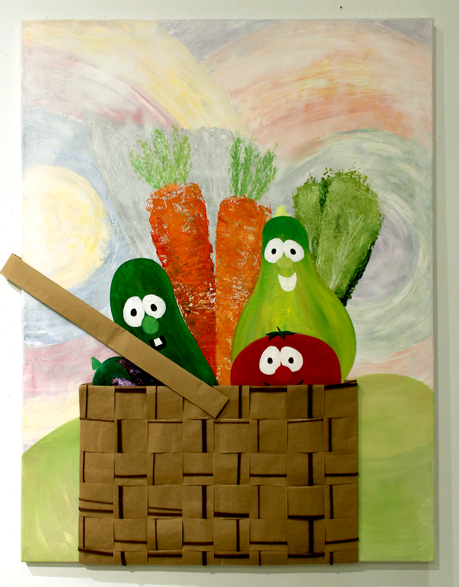
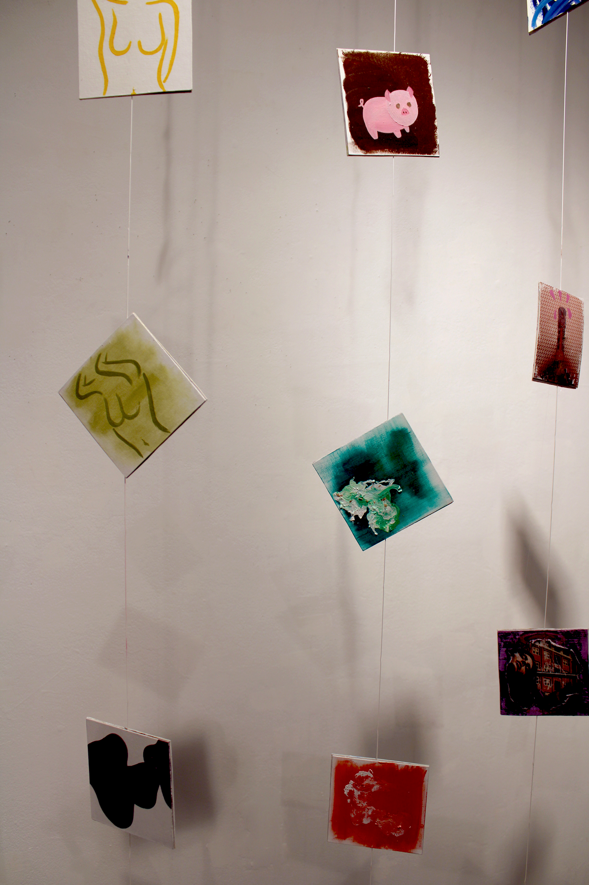
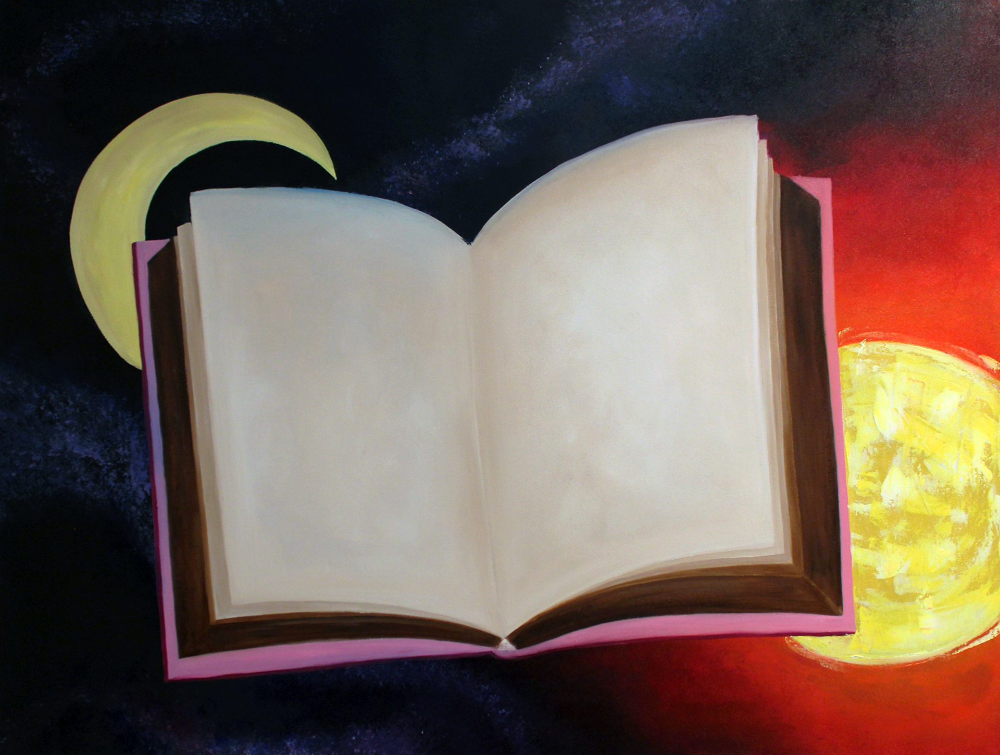
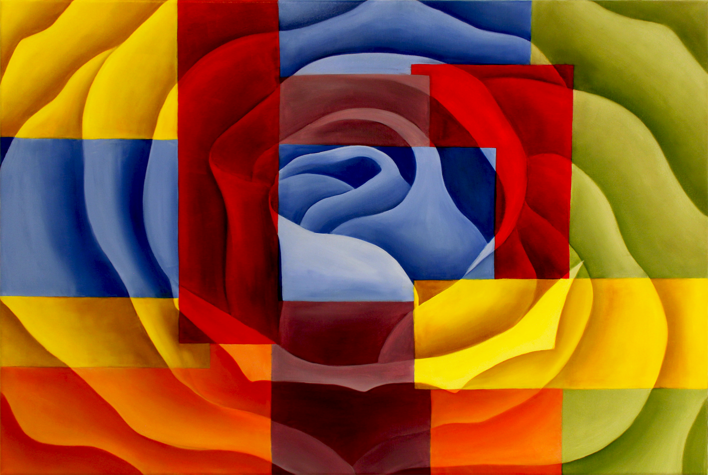

Paintings
hand-1.png)
Hand (2022)
Oil paint on 8x8 gessoed canvas
hand-2.png)
Hand 2 (2022)
Oil paint on 8x8 gessoed canvas
final.png)
Final Project (2022)
Oil paint on gessoed canvas

High Low (2023)
Mixed mediums (oil paint, acrylic paint, paper, and yarn) ontop of a gessoed canvas that was previously painted on with oil paints
5-a-day-1.png)
5 Paintings A Day (2023)
Oil paint on 5x5 gessoed cardstock

5 Paintings A Day (2023)
Oil paint on 5x5 gessoed cardstock

Moonlight Sunrise (2023)
Oil paint on gessoed canvas

Color (2023)
Oil Paint ontop of gessoed canvas
surface-form.png)
Surface, Form, Space, and Scale (2023)
Acrilic paint ontop of mixed mediums (demin, fuzzy fabric, t-shirt fabric, and knitted fabric)
final-1.png)
Final Project (2023)
Acrylic paint on mirror